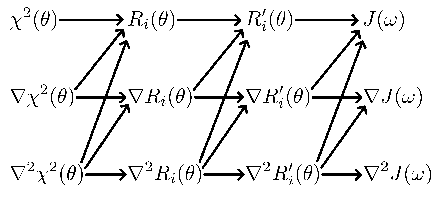

Next: 8.6 The value, gradient, Up: 8. Values, gradients, and Previous: 8.4 Construction of the Contents Index
The dependency chain which was outlined in the model-free chapter - that the chi-squared function is dependent on the transformed relaxation equations which are dependent on the relaxation equations which themselves are dependent on the spectral density functions - combine with the values, gradients, and Hessians to create a complex web of dependencies. The relationship between all the values, gradients, and Hessians are outlined in Figure 8.3.
|
 |